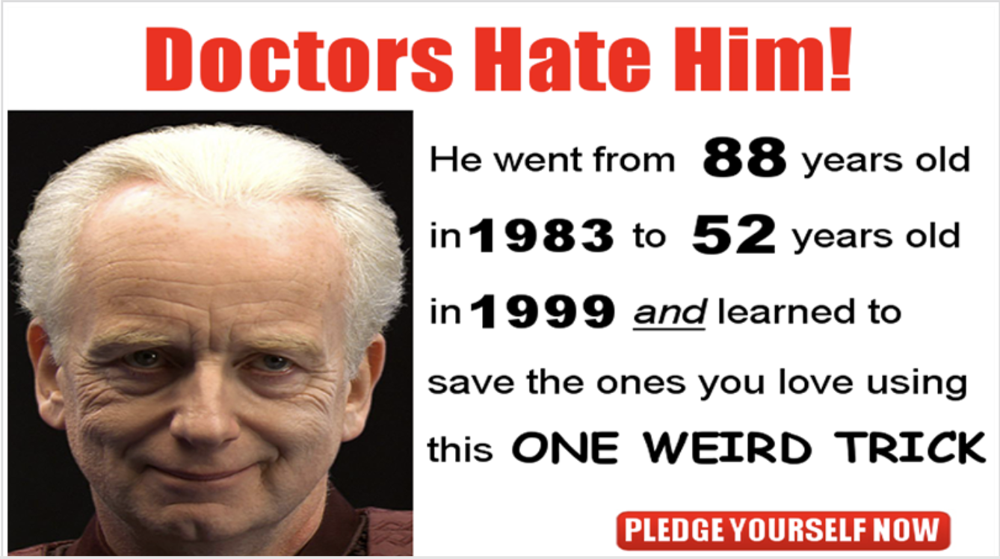
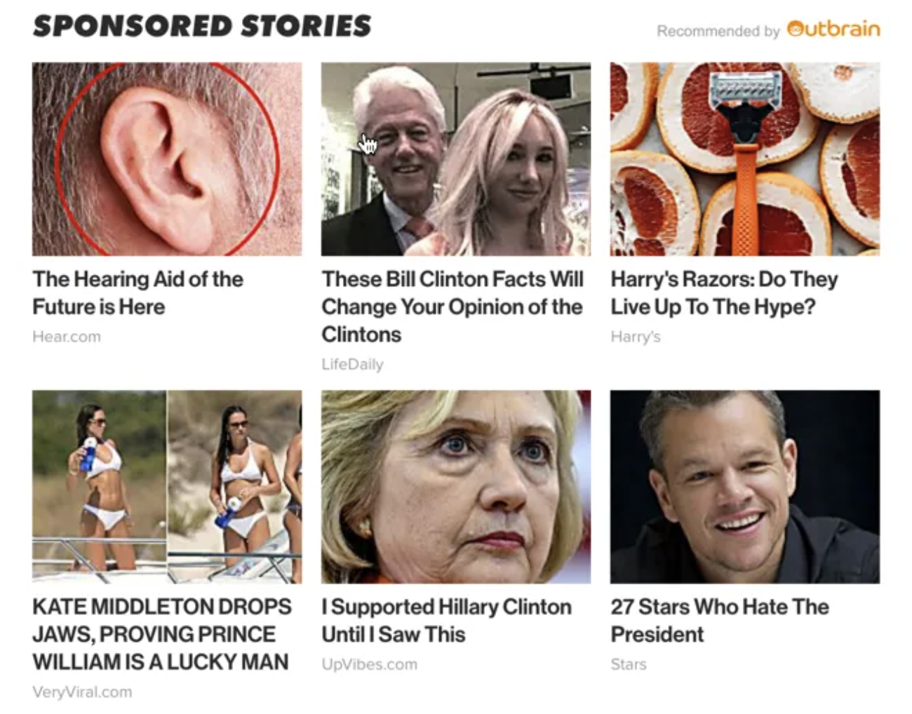

Insane Story of Local Man Who Created a Money Tree and Becomes Mariah Carey!
From illegal neurosurgery to hiding from the FBI, a strange man opens up about his mysterious and criminal past.
Boulder, CO – February 2nd, 2022
On the evening of February 2nd, the material world as we know it changed forever. After many decades of trial and error local scientist, Jerry Dives, has finally created a money tree. Yes, you heard that right. Dives has been genetically modifying seeds in order to grow a tree that produces dollar bills from its branches. After thousands of failed attempts, and on a tree that has been growing for nearly 6 months, a dollar bill finally bloomed from one of the tree’s branches. This is not only an extremely significant scientific discovery, but this will have devastating economic effects. Within minutes of this news breaking, the stock market has already crashed, and Dives has been taken into FBI protection.
So, how was this money tree created you may ask? Well, it starts with a single penny. But this isn’t just an ordinary penny. This shiny piece of metal has a secret ingredient: bendezium. Careful though! If you pick up bendezium with your bare hands, it will burn your skin. There are only 7 pennies with bendezium in the world, which are scattered across the seven continents. Jerry found one of the bendezium pennies in North America. He picked it up using his big metal tongs and stored it in a plastic container that matched the penny’s shape perfectly. Once Jerry got home, he placed the penny in a red planter with some soil and watered it.
Jerry waited one week and all of a sudden the penny grew into a money tree. Jerry was so excited, he was gonna be rich! He waited until the tree was in full bloom to cash it out. Unfortunately, after future examination, he realized that the tree only produced Monopoly money. While he would now be well prepared to win any Monopoly game he was a bit disappointed that he would not become a millionaire. Jerry had a plan though, he would somehow find a way to profit from this tree. He had a goal in life to be just as successful as Mariah Carey and he was going to get there no matter what it took.
The next day he took the tree to the CU Boulder greenhouse where scientists injected cotton fibers and green dye into the roots. They also painted the red planter purple so the money tree could feel a lot more regal. After trimming off all of the Monopoly money, the tree quickly corrected itself and started growing real Benjamins on Benjamins. Within a couple years, Jerry was swimming in a couple million dollars, but alas, he still hadn’t caught up to Mariah Carey’s bottomless pit of royalties from her Christmas classic, “All I want for Christmas is You.” Jerry was very impatient at this point. So, he resorted to something drastic. With all the money he’d collected from his tree so far, he paid experimental neurosurgeons to kidnap Mariah Carey and switch their brains.
These neurosurgeons were far from being qualified to perform this experimental surgery. Mariah Carey unfortunately was sadly unalived in the process of switching Jerry and her brain. But to Jerry’s pleasant surprise, his body accepted the brain and now plans to sell the money tree and continue his life as a scientist with a phenomenal voice. He is currently working on an album that is planned for release in the coming weeks.
This album turned out to be a huge success. Jerry sold more copies of his album than Michael Jackson’s Thriller. He made $5 billion! But Jerry didn’t care about the money. He already had a money tree at home that has given him more money than he could have imagined.
One morning, Jerry was sitting in his yellow polka-dot recliner when a man and a woman from the FBI knocked on his door. He jumped up from his recliner terrified. He didn't think he got himself in any trouble with the album, but he was worried that the FBI found out about his sketchy past. Some money laundering, a murder here and there, transporting drugs across the border, etc. He quickly opened the door. The FBI began speaking, "any chance we could get an autograph...". It was too late though, Jerry was already sprinting down the street.
Jerry ran faster than he ever did in his life. Jumping fences and running through houses until he found an unlocked car. He GTA style jumped the car in seconds and sped off towards the wilderness. Jerry kept repeating to himself–this is the beginning of my new life. After some time, Jerry got a fake passport and social security number, cut his hair, bought some colored contacts, and changed his name to David. He eventually picked up a passion for computer science and sound design. Now, he works at the University of Colorado Boulder as a professor teaching a variety of classes such as Creative Web Development, Sound, and Universal Design.
